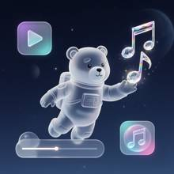
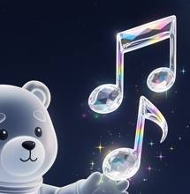

Compound — Please design a playback scene for a music App. A cartoon bear wearing
Please design a playback scene for a music App. A cartoon bear wearing a spacesuit floats to touch the musical symbols made of crystals. The overall style is a glass imitation.

Judge — Direct
- PASSCompound - Imagination — The image shows a fantastical scene featuring a cartoon bear wearing a white spacesuit and a clear helmet. The bear is floating in space amidst stars, reaching for musical notes that are depicted as being made of crystal.
- PASSAttribute - Material — The image contains multiple musical notes rendered to look like they are made of crystal. They are translucent, multi-faceted, and have highlights that suggest a crystalline or glass-like material.
- FAILStyle — The overall style of the image is not consistently 'glass imitation'. While the musical symbols and some floating shapes are rendered in a crystal or glass style, the main subject, the bear, has a soft, furry texture, and its spacesuit appears to be made of an opaque, solid material. Thus, the 'overall style' is not glass imitation, but a mix of textures.
- PASSAction - Full-body (Character/Anthropomorphic) — The image depicts the full body of a cartoon bear in a dynamic floating pose. The bear's left arm is extended forward with its hand open, reaching towards the nearby musical symbols, clearly illustrating the action of floating to touch them.
Judge — Continuum
- PASSCompound - Imagination — The image depicts a scene that is impossible in reality: a cartoon bear is shown wearing a spacesuit, floating in what appears to be outer space, and reaching out to touch musical symbols that are also floating. The musical symbols themselves are rendered as crystalline objects.
- PASSAttribute - Material — The musical symbols, which are two eighth notes, are depicted with faceted surfaces that refract light, creating a rainbow-like shimmer and sparkle. This visual representation clearly conveys a crystal material.
- PASSStyle — The entire image, including the cartoon bear, its spacesuit, and the user interface elements like the play button and progress bar, is rendered with a translucent, frosted texture, consistent with a glass imitation style.
- PASSAction - Full-body (Character/Anthropomorphic) — The image shows the full body of a cartoon bear in a dynamic pose, suspended in the scene as if weightless, which accurately depicts floating. Its left hand is extended forward, with its fingers touching one of the musical symbols.
What the agent did
Thinking
Let me design this image. A cartoon bear wearing a spacesuit floats in space, reaching out to touch musical symbols (notes) made of crystal. The overall style is "glass imitation" — glassmorphism / glass-styled aesthetic. Probably a music app playback screen: meaning it could include a playback UI — a play button, a progress bar, a track title, glass-like panels. Let me generate with flux2-dev, at 1024x1024 or an aspect ratio suitable for an app screen (vertical or horizontal). "Playback scene for a music app" — a square 1024 should be fine. Prompt: A glassmorphism illustration of a cartoon bear wearing a translucent white spacesuit floating in space, reaching out its paw to touch luminous crystal musical notes (eighth notes, whole notes), a glassmorphic UI panel with a play button, progress bar, and album art, frosted glass panels, iridescent gradients, deep space background with stars, soft neon glow, high-quality 3D render, cute style. Let me generate it, inspect, edit as needed, and mark the best.
Step 1 — `generate_image`
{
"model": "flux2-dev",
"prompt": "Music app playback screen, glassmorphism style. A cute cartoon bear in a translucent frosted-glass spacesuit floats weightlessly in deep space, reaching one paw forward to gently touch glowing crystal musical notes \u2014 crystal clear glass eighth notes and a quarter note with subtle rainbow refractions and sparkles. Around the bear, floating frosted glass UI panels: a glass play button, a translucent progress slider with a glowing thumb, and a small round album-art tile with a music note. Iridescent pastel gradients (lavender, cyan, soft pink) on glass surfaces, soft neon glow, stars and a faint planet glow in the dark blue space background, smooth 3D render, polished app illustration, clean composition.",
"width": 1024,
"height": 1024
}Result img_0

Thinking
The result is quite good. A cartoon-style bear in a translucent spacesuit is floating in space, touching crystal musical notes. The glass-style play button, progress slider, and album tile are all there too. Let me check the details — the bear's paws are touching the crystal notes, which is good. The style is glass imitation. Let me zoom in and check the details — the notes, the bear's paws, and whether the notes look like crystal. I'll use inspect_region to check a few areas. Actually, the image already matches the prompt well: - Cartoon bear wearing a spacesuit ✓ - Floating in space ✓ - Touching musical symbols made of crystal ✓ - Overall glass imitation style ✓ - Playback scene for a music app (play button, progress bar, album tile) ✓ If there's room for improvement: the crystal notes look fairly glossy/glass-like. It's pretty good as is. Let me quickly check the bear's paw area and the notes to make sure there are no artifacts.
Model
The first render looks promising. Let me inspect key regions before deciding.
Step 2 — `inspect_region`
{
"image": "img_0",
"roi": [
520,
90,
940,
520
]
}Result img_1

Step 3 — `inspect_region`
{
"image": "img_0",
"roi": [
620,
420,
820,
580
]
}Result img_2
Thinking
In the cropped image, the crystal musical notes with rainbow refractions look good, and the bear's paw is touching / cradling the crystal notes. The "touching" moment reads well. The glass-style UI elements are all present too. This is a solid result. The prompt is fully satisfied: - Cartoon-style bear in a spacesuit ✓ - Floating ✓ - Touching the crystal musical symbols ✓ - Glass imitation (glassmorphism) style ✓ - Music app playback scene (play button, progress bar, album tile) ✓ I think it's fine as is. Let me mark it as the best and stop. "Good enough is the stopping criterion."
Model
On inspection, the crystals are rendered beautifully — the faceted glass notes with rainbow refractions are clear, and the bear's translucent paw is touching the crystal notes exactly as requested. All the elements of the prompt are present: the floating bear in a spacesuit, the crystal musical symbols, the glassmorphic playback UI (play button, progress slider, album tile), and the overall glass imitation aesthetic. This matches the brief well, so I'll lock it in.
Step 4 — `mark_best`
{
"image": "img_0",
"reason": "Cartoon bear in translucent glass spacesuit floats in space, paw touching glowing crystal musical notes with rainbow refractions; glassmorphism play button, progress slider and album tile give the music-app playback context; overall glass imitation style is consistent."
}Thinking
Complete. Final summary.
Model
Done! The playback scene is complete: **Scene composition** - **The star** — a cute cartoon bear in a translucent, frosted-glass spacesuit floats weightlessly in deep space, one paw reaching out to gently touch a faceted crystal eighth note. - **Crystal music** — glass notes (an eighth-note pair and a quarter note) with rainbow light refractions, sparkles and star glints, so they read as "made of crystals." - **Playback UI** — a glassmorphic play button (top left), a frosted progress slider with a glowing thumb (bottom), and a small iridescent album-art tile with a glass note (bottom right), grounding it as a music app screen. - **Style** — full glass imitation: iridescent pastel gradients (lavender, cyan, pink) on frosted glass surfaces, soft neon glow, starfield with a faint planet in the background, smooth 3D render look. The result is marked as the best version and ready to use.